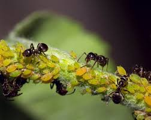
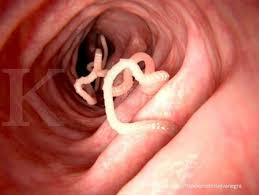

KELOMPOK 3: Simbiosis Parasitisme ü©∏
Dari 18 gambar di bawah, temukan dan Seret (Drag) **enam (6) contoh Simbiosis Parasitisme** ke dalam kotak merah!




Kotak Simbiosis Parasitisme
Seret 6 gambar di sini
Setelah selesai, kelompok segera bersiap untuk mempresentasikan 6 contoh Parasitisme tersebut dan menjelaskan alasannya di depan kelas! üì¢